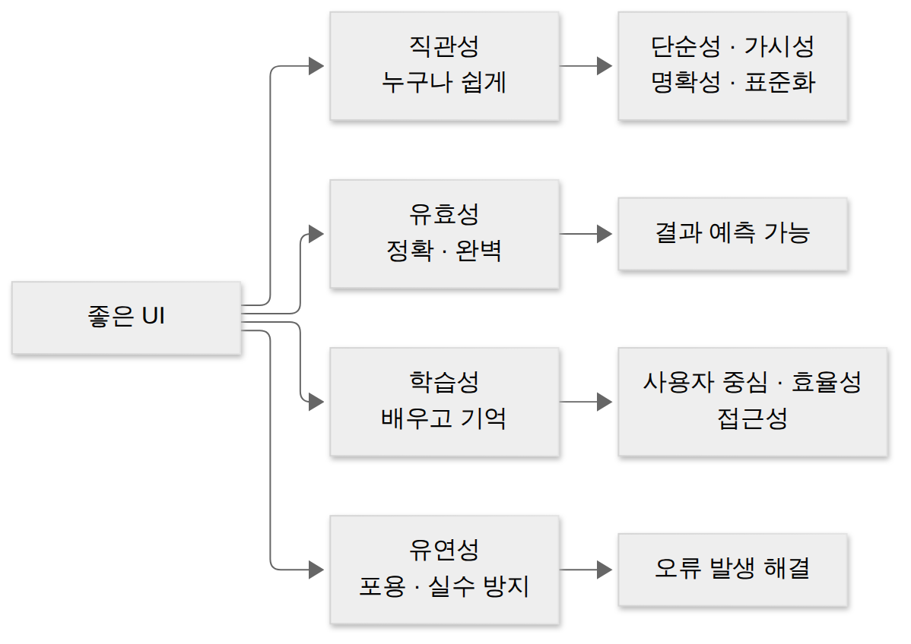

R06 · 화면 설계 — UI의 종류와 원칙, 화면을 이루는 부품·손짓, 그리고 네 가지 설계 도구
1과목 리뉴얼A2 리뉴얼 여섯째 장은 책 2장 화면 설계예요. 1장(R01~R05)이 “무엇을 만들까”를 정하는 장이었다면, 2장은 “사용자가 그걸 어떻게 만지게 할까”를 정하는 장이에요. 책 분량은 다섯 쪽 남짓이지만, UI 유형과 설계 원칙을 묻는 문제만 해도 최근 20회 시험 중 18회에 나왔어요. 1과목에서 가장 꾸준히 나오는 점수 창고 중 하나예요.
- UI의 넓은 정의와 좁은 정의를 말하고, CLI · GUI · NUI · OUI를 입력 방식으로 구별할 수 있다
- UI의 특징과 설계 원칙 네 가지(직관성 · 유효성 · 학습성 · 유연성)를 단서 단어로 구별하고, 무결성 · 희소성 같은 가짜 원칙을 가려낼 수 있다
- UI 설계 지침 아홉 가지와 UI 시스템에 필요한 기능 세 가지를 말하고, “오류를 숨긴다”, “심미성을 사용성보다 앞세운다” 같은 틀린 지침을 고를 수 있다
- 화면 구성요소(그리드 · 버튼/컨트롤 다섯 종 · Page · 팝업 · Alert)와 제스처 아홉 가지를 구별하고, 라디오 버튼과 체크 박스, 플릭과 스와이프를 가를 수 있다
- 와이어프레임 · 스토리보드 · 목업 · 프로토타입의 차이를 말하고, 유스케이스와 섞는 함정을 피할 수 있다
1부 (약 18분)
2부 (약 16분)
⓪ 큰 그림 — 단체 대여를 화면으로 옮기는 날
R05에서 씽씽 2.0 팀은 흩어져 있던 단체 대여 요구를 모델로 굳히고, 요구사항 관리 도구에 REQ-031 단체 대여(최대 20명)로 올려 베이스라인까지 잡았어요. 스프린트 4의 숙제는 이제 이 한 줄을 사용자가 실제로 누르는 화면으로 바꾸는 일이에요. 요구사항 문서는 회의에 들어간 사람만 읽지만 화면은 모든 이용자가 봐요. 그래서 화면에서 어긋난 요구는 회의실이 아니라 앱 마켓 별점 한 개짜리 리뷰로 돌아와요.
팀이 화면을 만들며 차례로 묻는 질문이 곧 책 2장의 순서예요. 먼저 어떤 종류의 UI로 만들까(글자 명령? 그래픽? 손짓·음성?). 다음으로 좋은 UI란 무엇이고 그러려면 무엇을 지켜야 하나(원칙과 지침). 그다음 어떤 부품과 손짓으로 화면을 짤까(구성요소와 제스처). 마지막으로 그 화면을 무엇으로 그려서 팀과 합의할까(와이어프레임 · 스토리보드 · 목업 · 프로토타입). 아래 그림의 다섯 칸이 오늘 페이지의 다섯 섹션이에요.
① UI란, 네 가지 유형 기출 18회
UI의 정의
UI(User Interface, 사용자 인터페이스)는 사용자와 시스템이 서로 뜻을 주고받을 수 있게 그 사이에 놓인 접점이에요. 넓게 보면 사람과 시스템 사이의 의사소통을 돕는 물리적 · 가상의 매개체 전부(키보드, 마우스, 터치스크린, 스피커, 화면 속 버튼까지)를 말하고, 좁게 보면 우리가 흔히 말하는 사람이 보고 만지는 화면을 가리켜요. 시험은 이 두 뜻을 섞어 쓰니, “UI = 화면”만 기억하면 “UI는 물리적 매개체도 포함한다”는 맞는 선지를 틀렸다고 착각하기 쉬워요.
UI와 늘 붙어 다니는 말이 인터랙션(Interaction)이에요. 입력 장치와 출력 장치를 매개로 사람과 디지털 시스템이 주고받는 의사소통 과정 자체를 말해요. 사용자가 버튼을 누르고(입력) 화면이 바뀌고(출력) 사용자가 그걸 보고 다음 행동을 고르는 한 바퀴가 하나의 인터랙션이에요. UI가 ‘접점’이라는 물건이라면 인터랙션은 그 접점에서 일어나는 ‘대화’예요. 뒤에 나올 유연성 원칙(“인터랙션을 최대한 포용”)과 프로토타입(“정적 화면에 인터랙션을 더한 것”)이 모두 이 단어에 기대고 있어요.
입력 방식으로 가르는 네 가지 유형
UI 유형은 사용자가 무엇으로 명령하는가 하나로 갈라요. 역사 순서와도 거의 같아서 한 줄로 외우기 좋아요.
CLI(Command Line Interface)는 사용자가 글자로 된 명령어를 키보드로 입력하고 결과도 글자로 받는 방식이에요. DOS와 Unix 터미널이 대표예요. 씽씽 2.0의 관제 서버에서 운영자가 scoot status --zone gangnam을 쳐서 구역별 배터리 상태를 보는 장면이 CLI예요. 명령만 정확히 알면 빠르고 자동화(스크립트)도 쉽지만, 주문을 정확히 외워야 문이 열리는 마법사 학교처럼 처음 온 사람에게는 문턱이 높아요.
GUI(Graphical User Interface)는 창 · 아이콘 · 메뉴 같은 그래픽 요소를 마우스나 전자펜으로 가리키고 눌러서 명령하는 방식이에요. 명령어를 외우지 않아도 보이는 것을 누르면 되니 사용자 층이 크게 넓어졌어요. 씽씽 운영팀이 쓰는 관리자 웹 페이지(지도 위 킥보드 아이콘을 클릭해 상태 보기)가 GUI예요.
NUI(Natural User Interface)는 사람이 원래 쓰는 몸짓 · 손가락 터치 · 음성 · 시선처럼 자연스러운 행동으로 명령하는 방식이에요. 스마트폰의 멀티터치(두 손가락으로 지도 확대), 동작 인식 게임기, 음성 비서가 대표예요. 씽씽 이용자 앱에서 지도를 손가락으로 벌려 확대하고 “근처 킥보드 찾아 줘”라고 말하는 것이 NUI예요. CLI가 주문을 외워야 하는 마법사 학교라면, NUI는 손짓만 해도 알아듣는 눈치 빠른 점원이에요. ⑤에서 볼 제스처가 NUI의 대표 입력이에요.
OUI(Organic User Interface)는 입력 장치가 곧 출력 장치가 되는 방식이에요. 따로 화면을 보고 버튼을 누르는 게 아니라, 모든 사물이 스스로 입력을 받고 결과를 보여 줘요. 휘어지는 디스플레이, 만지면 색이 바뀌는 사물 표면이 예예요. 씽씽이 구상 중인 차세대 킥보드에서 손잡이를 꽉 쥐면(입력) 손잡이 자체의 LED 띠가 초록으로 바뀌며 반납 완료를 알리는(출력) 장면이 OUI예요. “사물 인터넷 시대의 UI”라고 기억하면 돼요.
↔ 표가 넓어요. 옆으로 밀어서 보세요
| 유형 | 무엇으로 명령하나 | 대표 예 | 단서 단어 |
|---|---|---|---|
| CLI | 키보드로 글자 명령 입력, 결과도 글자 | DOS, Unix 터미널 | 명령어 · 텍스트 · 문자열 |
| GUI | 그래픽 요소를 마우스 · 전자펜으로 선택 | 윈도 바탕화면, 웹 페이지 | 그래픽 · 아이콘 · 마우스 |
| NUI | 몸짓 · 터치 · 음성 등 자연스러운 행동 | 스마트폰 멀티터치, 동작 인식, 음성 비서 | 멀티터치 · 동작 인식 · 신체 |
| OUI | 사물이 입력을 받고 스스로 출력 | 휘어지는 디스플레이, 반응하는 사물 표면 | 입력 장치 = 출력 장치 · 모든 사물 |
② UI의 특징과 설계 원칙 네 가지 기출 18회
UI의 특징
UI가 왜 따로 설계할 대상인지는 UI가 해 주는 일을 보면 알 수 있어요. 책은 네 가지를 꼽아요. 첫째, 잘 만든 UI는 사용자가 잘못 누를 여지를 줄여 오류를 최소화해요. 둘째, 구현하려는 기능을 화면 위 버튼과 칸으로 드러내 작업 기능을 구체화해요. 셋째, 개발자가 아니라 사용자 중심의 상호 작용이 되도록 돕고, 넷째, 시스템이 지금 무슨 상태이고 방금 한 행동이 어떤 효과를 냈는지를 보여 줘요. 단체 대여 화면으로 말하면, 인원 칸에 숫자만 들어가게 해서 엉뚱한 입력을 막고(오류 최소화), “단체 대여”라는 기능을 신청 버튼 하나로 드러내고(기능 구체화), 신청 후 “20명 결제 완료”를 띄워 결과를 보여 주는 것이에요.
그래서 이 특징을 뒤집은 문장이 단골 오답이에요. “UI는 편의성을 높여 작업 시간을 증가시킨다”는 말은 앞뒤가 안 맞아요. 편해지면 작업 시간은 줄어야 하죠. “UI는 개발자 중심으로 설계되어야 한다”도 틀린 말이에요. 화면은 그것을 쓰는 사람을 위해 있어요.
설계 원칙 네 가지 — 좋은 UI의 품질 기준
UI 설계 원칙은 “좋은 UI란 무엇인가”에 답하는 네 가지 품질 기준이에요. 구체적으로 무엇을 하라는 행동 규칙(③의 지침)보다 한 단계 위에 있는, 화면을 평가하는 잣대예요. 네 원칙마다 그 원칙을 이루는 세부 특성이 두세 개씩 붙어 있고, 시험은 이 세부 특성과 정의 속 단서 단어로 원칙 이름을 맞히게 해요.
직관성은 누구나 처음 봐도 쉽게 이해하고 쓸 수 있어야 한다는 원칙이에요. 세부 특성은 쉬운 검색, 쉬운 사용성, 일관성이에요. 단체 대여 화면에서 인원을 늘리는 버튼을 ‘+’ 모양으로 두고, 앱의 다른 화면과 같은 자리 같은 색으로 두면 설명서 없이도 누구나 누를 수 있어요. 시험 지문에 “누구나 쉽게 이해하고 사용”이 보이면 직관성이에요.
유효성은 사용자의 목표를 정확하고 완벽하게 달성하게 해야 한다는 원칙이에요. 세부 특성은 쉬운 오류 처리와 복구예요. 대표자가 20명분 결제를 눌렀을 때 중간에 몇 명만 빠지거나 두 번 결제되는 일 없이 정확히 한 번에 끝나고, 결제가 실패하면 처음부터 다시 입력하지 않고 그 자리에서 복구되는 것이 유효성이에요. 단서는 “정확하고 완벽하게”예요.
학습성은 초보자와 숙련자 모두가 쉽게 배우고 사용할 수 있어야 한다는 원칙이에요. 세부 특성은 쉬운 학습, 쉬운 접근, 쉬운 기억이에요. 단체 대여를 처음 신청해 보는 회사 총무도, 매주 동아리 라이딩을 잡는 회장도 금방 익히고 다음에 와서도 어디에 뭐가 있었는지 기억할 수 있어야 해요. 단서는 “초보 · 숙련자 모두”, “배우고 기억”이에요.
유연성은 사용자의 인터랙션을 최대한 포용하고 실수를 방지해야 한다는 원칙이에요. 세부 특성은 오류 예방, 실수 포용, 오류 감지예요. 인원 칸에 ‘20’이라고 쳐도 ‘스무 명’이라고 말해도 받아 주고(포용), 21을 넣는 순간 바로 경고해 결제 단계까지 가지 않게 막고(예방 · 감지), 실수로 지운 참가자를 되살릴 수 있게(실수 포용) 하는 것이 유연성이에요. 단서는 “포용”, “실수 방지”예요. 출제자는 직관성의 “누구나 쉽게”를 들고 와서 유연성이라는 옷을 입혀 보내는 걸 좋아해요. 옷이 아니라 이름표, 즉 단서 단어를 보세요.
원칙 문제에는 이름만 그럴듯한 가짜 원칙도 섞여 나와요. 무결성, 희소성, 멀티운용성은 UI 설계 원칙이 아니에요(무결성은 데이터베이스, 희소성은 경제학에서 들어 본 말이죠). 또 하나의 경계 함정은 품질 표준 ISO/IEC 9126이에요. 여기서 학습성은 사용성의 하위 특성이에요. “기능성의 하위 특성이 아닌 것은?”에 학습성이 정답으로 나오는 이유예요. 품질 특성은 R19에서 자세히 볼게요.
③ UI 설계 지침과 UI 시스템의 필요 기능 기출 12회
원칙과 지침은 무엇이 다른가
UI 설계 지침은 원칙을 화면에서 실제로 지키기 위해 설계자가 따라야 할 구체적인 행동 규칙이에요. 원칙이 “좋은 화면은 누구나 쉽게 쓸 수 있어야 한다”라는 목표라면, 지침은 “그러려면 조작 방법을 단순하게 하고, 주요 기능은 첫 화면에 보이게 두라”는 할 일 목록이에요. 시험 문제도 원칙은 이름 맞히기, 지침은 “옳지 않은 지침 고르기”로 모양이 달라요. 씽씽 팀은 아홉 가지 지침을 단체 대여 화면 리뷰 체크리스트로 썼어요.
| 지침 | 무엇을 하라는가 | 단체 대여 화면 리뷰에서 |
|---|---|---|
| 사용자 중심 | 실제 사용자를 이해하고 그들이 쉽게 쓰게 만든다. 보기 좋음(심미성)보다 쓰기 좋음(사용성)이 먼저 | 멋진 배경 사진보다 인원 입력 칸을 크게 |
| 효율성 | 버튼과 조작 방법을 기억하기 쉽고 빨리 익숙해지게 한다 | 자주 쓰는 ‘지난 단체 그대로 다시 신청’을 한 번에 |
| 단순성 | 조작을 단순하게 해 사용자 부담을 줄인다 | 신청 7단계 → 2단계로 |
| 결과 예측 가능 | 누르기 전에 무슨 일이 일어날지 알 수 있게 한다 | 버튼 이름을 ‘확인’ 대신 ‘20명 결제하기’로 |
| 가시성 | 주요 기능은 메인 화면에 드러나 쉽게 조작하게 한다 | ‘단체 대여’를 메뉴 깊숙이가 아니라 첫 화면에 |
| 표준화 | 디자인과 기능 구조를 표준화해 한 번 배우면 다른 곳에서도 쉽게 쓰게 한다 | 개인 대여와 같은 결제 화면 구조 |
| 접근성 | 나이 · 직무 · 성별 등이 다른 다양한 사용자를 고려한다 | 글자 크기 조절, 화면 낭독기 지원 |
| 명확성 | 사용자가 개념을 쉽게 알아보게 한다 | ‘대표 결제’와 ‘각자 결제’를 그림과 한 줄 설명으로 |
| 오류 발생 해결 | 오류를 숨기지 않고 정확히 알리며 회복 방법까지 안내한다 | 21명 입력 시 즉시 빨간 안내 + 해결 방법 제시 |
아홉 개 중 시험이 가장 아끼는 칸은 마지막 오류 발생 해결이에요. 내용은 이래요. 사용자가 오류 상황을 정확히 알아차리게 하고, 오류 메시지는 이해하기 쉽게 쓰며 오류에서 빠져나오는 방법을 자세히 알려 줘야 해요. 오류 때문에 생길 수 있는 나쁜 결과도 적극적으로 알려야 하고, 메시지는 글자뿐 아니라 소리나 색까지 써서 보고 듣는 순간 뜻이 전해지게 하고, 오류를 쉽게 고칠 수 있게 피드백을 줘야 해요. 오류를 숨기는 UI는 무슨 일이 있어도 “괜찮아”만 반복하는 연인 같아요. 당장은 평화롭지만 나중에 한꺼번에 터져요.
원칙 네 개와 지침 아홉 개를 따로 외우면 금방 섞여요. 아래 그림처럼 “이 지침은 어느 원칙을 지키려는 행동인가”로 묶어 보면 기억이 쉬워요. 단, 이 묶음은 기억을 돕는 정리일 뿐 책이 정한 공식 분류는 아니에요. 시험은 원칙 이름과 지침 이름을 각각 묻기 때문에 묶음 자체가 문제로 나오지는 않아요.

UI 시스템이 갖춰야 할 기능
지침을 지키려면 화면 뒤의 시스템도 받쳐 줘야 해요. 책은 UI 시스템에 꼭 필요한 기능을 세 가지로 정리해요. 사용자가 넣은 값이 올바른지 입력을 검증하고, 오류가 나면 에러를 처리하고 에러 메시지를 보여 주고, 사용자가 막혔을 때 도움말(Help)과 프롬프트(Prompt, 다음 입력을 안내하는 문구)를 제공하는 것이에요. 아래 단계 그림이 인원 21명 입력 한 건에서 이 세 기능이 차례로 일하는 모습이에요. “UI 시스템에 필요한 기능이 아닌 것”으로는 소스 코드 분석이나 오류 복구처럼 화면이 아니라 개발 · 운영 쪽 일이 오답으로 나와요.
| 순서 | 일어난 일 | 필요 기능 · 지침 |
|---|---|---|
| ① 입력 | 총무가 인원 칸에 21을 입력하고 칸을 벗어남 | 입력 검증 시작 |
결제 버튼까지 가기 전에, 칸을 벗어나는 순간 검증이 돌아요.
| 순서 | 일어난 일 | 필요 기능 · 지침 |
|---|---|---|
| ① 입력 | 21 입력 | 입력 검증 |
| ② 검증 | “최대 20” 규칙(REQ-031)에 걸림 → 오류로 판정 | 입력 검증 · 에러 처리 |
규칙은 R05의 베이스라인에서 왔어요. 요구가 바뀌면 이 검증도 같이 바뀌어야 해요.
| 순서 | 일어난 일 | 필요 기능 · 지침 |
|---|---|---|
| ② | 오류 판정 | 에러 처리 |
| ③ 알림 | 칸 테두리 빨강 + 짧은 진동 + “단체는 최대 20명이에요” | 에러 메시지 · 오류 발생 해결(색 · 소리 · 쉬운 말) |
글자 하나에만 기대지 않고 색과 진동까지 써요. 오류를 숨기지 않는 거예요.
| 순서 | 일어난 일 | 필요 기능 · 지침 |
|---|---|---|
| ③ | 오류 알림 | 에러 메시지 |
| ④ 회복 | “두 팀으로 나눌까요? / 20명으로 줄일까요?” 버튼 + ‘단체 대여 도움말’ 링크 | 도움말 · 프롬프트 · 회복 방법 안내 |
무엇이 틀렸는지에서 끝나지 않고 다음에 무엇을 하면 되는지까지 알려 줘요.
④ 화면 구성요소
원칙과 지침이 정해졌으면 이제 화면을 실제로 짤 부품이 필요해요. UI 화면 구성요소는 화면을 이루는 부품 단위예요. 책은 다섯 묶음으로 나눠요. 데이터를 표 모양으로 늘어놓는 그리드, 사용자 입력을 받는 버튼/컨트롤, 페이지 전체에 걸쳐 쓰는 Page 요소, 현재 화면 위에 따로 뜨는 팝업 요소, 사용자에게 상황을 알리는 Alert 요소예요. 요구사항이 화면에 제대로 담기려면 이 부품을 알맞은 자리에 고르는 일이 중요해요.
그리드와 버튼/컨트롤 다섯 가지
그리드(Grid)는 UI를 구성하는 방법 가운데 행과 열로 된 테이블 형태로 정보를 늘어놓는 요소예요. 단체 대여 화면의 참가자 명단(이름 · 연락처 · 헬멧 사이즈)이 그리드예요.
버튼/컨트롤은 사용자 입력을 받는 부품이고 시험에 이름이 나오는 것은 다섯 가지예요. 콤보 박스(Combo Box)는 입력 칸 하나처럼 보이다가 누르면 고를 수 있는 목록이 아래로 펼쳐지는 부품이에요(대여 지점 고르기). 토글 버튼(Toggle Button)은 켜짐 · 꺼짐처럼 두 가지 상태 중 하나로 누를 때마다 바뀌는 부품이에요(알림 받기). 텍스트 박스(Text Field)는 사용자가 글자를 직접 써 넣는 칸이고, 한 줄짜리도 여러 줄짜리도 있어요(단체명, 요청 사항). 라디오 버튼(Radio Button)은 여러 선택지 중 딱 하나만 고를 때 쓰고, 체크 박스(Checkbox)는 여러 선택지 중 하나 이상을 골라도 될 때 써요.
라디오 버튼이라는 이름은 옛날 자동차 라디오의 채널 버튼에서 왔어요. 한 채널 버튼을 누르면 이미 눌려 있던 다른 버튼이 튀어 올라와서, 동시에 두 채널을 들을 수는 없었죠. 결제 방식(대표 결제 / 각자 결제)처럼 둘을 동시에 고르면 말이 안 되는 곳은 라디오, 추가 옵션(헬멧 대여 / 보험 가입)처럼 둘 다 골라도 되는 곳은 체크 박스예요.
Page · 팝업 · Alert 요소
Page 요소는 화면 한 장을 이루는 공통 장치들이에요. 폰트 규정, 아이콘 규정, 체크 박스 · 라디오 버튼의 공통 모양, 알림 표시(알럿), 이미지 표시, 탭 표시, 스텝(진행 단계) 표시, 페이지 이동, 위아래 스크롤, 정보 입력 칸 배치 같은 것을 페이지마다 같은 규칙으로 맞추는 요소예요. 단체 대여 화면 위쪽의 ‘1/2 단계’ 표시가 스텝 표시예요.
팝업 요소는 지금 화면 위에 따로 뜨는 창이에요. 브라우저 창이 하나 더 열리는 윈도 팝업과, 같은 페이지 안에서 레이어를 한 겹 덮어 띄우는 레이어 팝업이 있어요. 단체 대여 화면에서 ‘대표 결제란?’을 누르면 뜨는 설명 상자가 레이어 팝업이에요.
Alert 요소는 사용자에게 상황을 알려 주는 알림이에요. 무엇을 알리는지에 따라 네 가지로 나눠요. 필요한 정보가 빠졌거나 잘못됐을 때의 정보 누락 · 오류 Alert, 업무 처리가 끝났음을 알리는 처리 완료 Alert, 지우거나 고치기 전에 한 번 더 묻는 삭제 · 수정 Alert, 업무 진행에 필요한 사항을 알려 주는 업무 안내성 Alert예요. ③에서 본 ‘오류 발생 해결’ 지침이 실제 화면에서 쓰는 부품이 바로 이 Alert예요.
| Alert 종류 | 언제 뜨나 | 단체 대여 화면 예 |
|---|---|---|
| ⚠ 정보 누락 · 오류 | 필요한 정보가 빠졌거나 틀렸을 때 | “대여 지점을 골라 주세요”, “최대 20명이에요” |
| ✅ 처리 완료 | 요청한 업무가 끝났을 때 | “20명 대여 신청이 완료됐어요” |
| ❓ 삭제 · 수정 | 지우거나 고치기 전에 한 번 더 확인할 때 | “참가자 이○○ 님을 명단에서 뺄까요?” |
| ℹ 업무 안내성 | 업무 진행에 필요한 사항을 알려 줄 때 | “단체 대여는 출발 1시간 전까지 신청해 주세요” |
직접 해 보기 — 어떤 부품을 쓸까? 오른쪽 칸을 가리고 장면마다 알맞은 부품을 먼저 말해 보세요.
| 장면 | 알맞은 부품 |
|---|---|
| 헬멧 사이즈 S · M · L · XL 중 한 사람이 하나만 고른다 | 라디오 버튼 |
| 관심 있는 라이딩 코스(한강 · 남산 · 서울숲)를 여러 개 고른다 | 체크 박스 |
| 야간 라이딩 모드를 켜거나 끈다 | 토글 버튼 |
| 전국 120개 대여 지점 중 하나를 목록을 펼쳐 고른다 | 콤보 박스 |
| 운영팀에 남길 요청 사항을 자유롭게 쓴다 | 텍스트 박스 |
| 지난달 단체 대여 내역을 날짜 · 인원 · 금액 열로 늘어놓는다 | 그리드 |
⑤ UI 제스처
UI 제스처는 터치스크린 위에서 손가락을 어떻게 움직이느냐로 명령을 전달하는 방식이에요. ①에서 본 NUI의 대표 입력이죠. 책이 꼽는 제스처는 아홉 가지예요. 탭, 더블 탭, 프레스, 플릭, 스와이프, 팬, 드래그, 핀치, 로테이트. 이름이 많아 보여도 손가락이 몇 개인가, 얼마나 오래 닿아 있나, 닿은 채 움직이나 세 가지 질문이면 모두 갈라져요.
손가락 하나로 움직이지 않고 누르는 것부터 볼게요. 탭(Tap)은 화면을 짧고 가볍게 한 번 건드리는 것, 더블 탭(Double Tap)은 빠르게 두 번 건드리는 것, 프레스(Press)는 손가락을 대고 길게 꾹 누르고 있는 것이에요. 씽씽 지도에서 킥보드 아이콘을 탭하면 정보가 뜨고, 지도를 더블 탭하면 한 단계 확대되고, 아이콘을 프레스하면 ‘이 킥보드 예약’ 메뉴가 떠요.
손가락 하나로 움직이는 제스처가 가장 헷갈려요. 플릭(Flick)은 수평이나 수직 방향으로 빠르게 튕기듯 미는 동작이에요. 스와이프(Swipe)는 화면을 터치한 상태 그대로 끌어 미는 동작이에요. 둘 다 미는 건데 플릭은 딱밤처럼 툭 치고 떠나고, 스와이프는 쓰다듬듯 닿은 채로 지나가요. 쓰임으로 보면 플릭은 긴 목록을 휙 넘길 때, 스와이프는 대여 내역 한 줄을 옆으로 밀어 ‘삭제’ 버튼을 꺼낼 때처럼 한 방향으로 넘기는 일에 써요. 팬(Pan)도 손을 떼지 않고 끄는 동작이지만, 보이는 영역 자체를 이리저리 옮기는 데 써요(지도를 손가락으로 잡고 주변 동네를 둘러보기). 드래그(Drag)는 화면 위의 이미지나 항목을 잡아 끌고 가서 손을 떼어 놓는 동작이에요(참가자 이름을 다른 팀 칸으로 끌어 옮기기). 팬은 화면이 움직이고, 드래그는 물건이 옮겨져요.
손가락 두 개를 쓰는 제스처는 둘이에요. 핀치(Pinch)는 두 손가락을 화면에 댄 채 사이를 벌리거나 좁히는 동작으로 확대 · 축소에 쓰고, 로테이트(Rotate)는 두 손가락을 댄 채 돌리는 동작으로 지도 방향 회전에 써요.
↔ 표가 넓어요. 옆으로 밀어서 보세요
| 손가락 | 움직임 | 제스처 | 씽씽 앱에서 |
|---|---|---|---|
| 하나 | 제자리 · 짧게 | 탭 / 더블 탭 | 아이콘 정보 보기 / 지도 한 단계 확대 |
| 하나 | 제자리 · 길게 | 프레스 | 킥보드 예약 메뉴 띄우기 |
| 하나 | 빠르게 튕김 | 플릭 | 긴 대여 내역 휙 넘기기 |
| 하나 | 닿은 채 밀기 | 스와이프 / 팬 | 내역 한 줄 밀어 삭제 / 지도 둘러보기 |
| 하나 | 대상을 끌어 놓기 | 드래그 | 참가자를 다른 팀 칸으로 옮기기 |
| 둘 | 벌림 · 좁힘 / 회전 | 핀치 / 로테이트 | 지도 확대 · 축소 / 지도 방향 돌리기 |
직접 해 보기 — 이 동작의 이름은? 오른쪽 칸을 가리고 답해 보세요. 하나는 제스처 이름이 아니에요.
| 동작 | 이름 |
|---|---|
| 사진을 두 손가락으로 벌려 크게 본다 | 핀치 |
| 알림 목록을 엄지로 툭 쳐서 빠르게 내려 보낸다 | 플릭 |
| 즐겨찾기 지점 아이콘을 손가락으로 잡아 다른 자리까지 끌고 가서 손을 뗀다 | 드래그 |
| 화면을 한 손가락으로 짧게 두 번 두드린다 | 더블 탭 |
| 손가락을 화면에 둔 채 넓은 지도를 이리저리 옮겨 본다 | 팬 |
| 손끝을 흐르듯 움직이는 ‘플로(Flow)’ | 제스처 이름 아님 |
⑥ UI 화면 설계 도구
부품과 손짓을 골랐으면 이제 화면을 그려서 기획자 · 디자이너 · 개발자 · 고객이 같은 그림을 보고 합의해야 해요. 책은 이때 쓰는 도구를 네 가지로 꼽아요. 이름이 비슷하고 실무에서도 섞어 부르기 때문에, 시험은 정의 한 줄을 주고 이름을 고르게 해요. 각 도구를 무엇을 담나와 움직이나 두 질문으로 보면 갈라져요.
와이어프레임(Wireframe)은 화면 한 장마다 무엇을 어디에 둘지, 즉 화면 단위의 레이아웃(배치)을 잡는 작업이에요. 기획자 · 고객 같은 이해관계자와 화면 구성을 맞춰 보거나 서비스 흐름을 가볍게 돌려 볼 때 써요. 색도 그림도 없이 회색 상자와 선으로 “여기에 인원 칸, 여기에 결제 버튼” 정도만 정해요. 씽씽 팀이 회의실 화이트보드에 그린 첫 스케치가 와이어프레임이에요.
스토리보드(Storyboard)는 정책, 프로세스, 콘텐츠 구성, 와이어프레임(UI · UX), 기능 정의, 데이터베이스 연동까지 서비스 구축에 필요한 정보를 모두 담은 설계 산출물이에요. 화면 그림 옆에 “① 인원 칸: 2~20, 초과 시 오류 Alert”, “② 결제 버튼: 대표 결제면 결제 API 1회 호출, 결과를 rental_group 테이블에 저장” 같은 설명이 번호로 붙어요. 디자이너와 개발자가 실제로 이걸 보고 일하는, 네 도구 중 가장 큰 그릇이에요.
목업(Mockup)은 디자인, 사용 방법 설명, 평가 등을 위해 실제 화면과 비슷하게 만든 정적인 모형이에요. 색 · 글꼴 · 아이콘까지 입혀 진짜 앱처럼 보이지만, 시각적으로 구성요소를 배치한 것일 뿐 실제로 구현되어 동작하지는 않아요. 버튼을 눌러도 아무 일도 안 일어나요.
프로토타입(Prototype)은 정적인 화면(와이어프레임이나 스토리보드)에 동적인 효과를 입혀 실제 구현된 것처럼 시뮬레이션해 볼 수 있게 만든 모형이에요. 버튼을 누르면 다음 화면으로 넘어가고, 21을 넣으면 Alert가 떠요. 실제 서버나 결제는 없지만 사용자는 “이렇게 동작하겠구나”를 손으로 겪어 볼 수 있어요. 그래서 사용자 테스트는 보통 프로토타입으로 해요.
음식으로 비유하면 와이어프레임은 접시 위 배치만 적은 메모, 목업은 메뉴판에 넣을 실물 같은 사진, 프로토타입은 시식용으로 한입 먹어 볼 수 있는 한 접시, 스토리보드는 재료 · 조리법 · 원가 · 발주처까지 다 적힌 메뉴 개발 기획서예요. 출제자가 노리는 짝은 목업과 프로토타입이에요. 둘 다 진짜처럼 보이지만 목업은 사진이라 먹을 수 없고, 프로토타입은 맛을 볼 수 있어요.
씽씽 팀이 실제로 이 도구들을 어떤 순서로 썼는지 단계로 따라가 볼게요. 순서는 팀마다 다를 수 있지만, 가벼운 그림으로 빨리 합의하고 무거운 도구로 갈수록 세부를 채운다는 흐름은 같아요.
| 단계 | 만든 것 | 누가 무엇을 합의했나 |
|---|---|---|
| ① 와이어프레임 | 화이트보드에 회색 상자 배치 | 기획 · 운영 · 개발이 “인원 칸은 위, 결제는 아래”에 합의 |
색도 글꼴도 없으니 지우고 다시 그리는 데 1분이면 돼요. 배치 논쟁은 여기서 끝내요.
| 단계 | 만든 것 | 누가 무엇을 합의했나 |
|---|---|---|
| ① | 와이어프레임 | 배치 합의 |
| ② 스토리보드 | 화면마다 번호 주석 · 정책(2~20명) · 결제 API · DB 테이블 | 개발자가 “무엇을 어디에 저장하나”까지 확인 |
디자이너와 개발자가 함께 보는 최종 설계 문서예요. R05의 요구 번호(REQ-031)도 여기 적혀요.
| 단계 | 만든 것 | 누가 무엇을 합의했나 |
|---|---|---|
| ② | 스토리보드 | 정책 · 기능 · DB 합의 |
| ③ 목업 | 디자이너가 브랜드 색 · 아이콘을 입힌 정적 시안 | 마케팅팀이 “이 색과 톤으로 간다” 승인 |
눌러도 안 움직이지만 겉모습은 진짜예요. 디자인 평가에 쓰여요.
| 단계 | 만든 것 | 누가 무엇을 합의했나 |
|---|---|---|
| ③ | 목업 | 디자인 승인 |
| ④ 프로토타입 | 목업에 화면 전환 · Alert 동작을 연결한 클릭 모형 | 실제 동아리 회장 5명이 손으로 눌러 봄 |
서버 없이도 흐름을 손으로 겪어 볼 수 있어요.
| 단계 | 만든 것 | 누가 무엇을 합의했나 |
|---|---|---|
| ④ | 프로토타입 | 사용자 테스트 |
| ⑤ 고치기 | “참가자를 지웠다가 되살릴 수 없다” 발견 → 되돌리기 추가 | 유연성(실수 포용) 결함을 코드 짜기 전에 수정 |
코딩 전에 찾았으니 고치는 값이 싸요. 그림 1의 초록 점선(사용자 테스트 → 원칙으로 되돌아가기)이 이 장면이에요.
↔ 표가 넓어요. 옆으로 밀어서 보세요
| 도구 | 무엇을 담나 | 움직이나 | 가르는 단서 |
|---|---|---|---|
| 와이어프레임 | 화면 단위 레이아웃 | 아니요 | 이해관계자 협의 · 간략한 흐름 공유 · 배치 |
| 스토리보드 | 정책 · 프로세스 · 콘텐츠 · 와이어프레임 · 기능 정의 · DB 연동 | 아니요 | 모든 정보 · 최종 설계 산출물 |
| 목업 | 실제와 비슷한 겉모습 | 아니요(구현 안 됨) | 실제 화면과 유사 · 정적 · 시각적 배치만 |
| 프로토타입 | 정적 화면 + 동적 효과 | 예(시뮬레이션) | 동적 효과 · 실제 구현된 것처럼 · 시뮬레이션 |
두 가지 경계도 같이 챙겨 두세요. 하나는 유스케이스예요. 사용자 입장에서 목표를 이루려면 시스템과 무엇을 주고받는지 기술한 것으로, R03에서 본 요구사항 기술 방법이지 화면 설계 도구가 아니에요. 그런데 시험에서는 설계 도구 이름들 사이에 정답으로도, 오답으로도 섞여 나와요. 다른 하나는 프로토타입 모형이에요. 소프트웨어 생명주기 모형 가운데 시제품을 만들어 요구를 확인하는 개발 방식의 이름으로, 오늘의 화면 설계 도구 프로토타입과 생각이 닮았지만 시험 범위가 달라요(생명주기 모형은 R14에서 봐요).
직접 해 보기 — 무슨 도구일까? 오른쪽 칸을 가리고 답해 보세요.
| 설명 | 도구 |
|---|---|
| 투자 설명회 슬라이드에 넣으려고 실제 앱 스크린숏처럼 만든 한 장. 링크도 버튼도 동작하지 않는다 | 목업 |
| 화면 그림 옆에 “③ 결제 성공 시 rental_group에 저장, 실패 시 오류 Alert” 같은 설명이 번호로 붙은 문서 | 스토리보드 |
| 회의 중 포스트잇과 펜으로 “제목, 입력 칸 둘, 버튼 하나” 자리만 잡아 둔 그림 | 와이어프레임 |
| 테스트 참가자가 휴대폰으로 눌러 보면 다음 화면으로 넘어가고 오류 안내도 뜨지만, 결제는 실제로 되지 않는 모형 | 프로토타입 |
| “동아리 회장은 단체 대여를 신청한다 → 시스템은 인원을 확인한다 …”처럼 사용자와 시스템이 주고받는 일을 적은 것 | 유스케이스(설계 도구 아님) |
⑦ 책 밖에서 함께 나오는 말 — UX · HCI · 감성공학 · 사용성 평가
책 2장에는 없지만 공식 출제 기준의 UI 항목과 예전 기출에 함께 등장하는 말이 넷 있어요. 최근 시험 빈도는 낮으니 정의만 정확히 잡아 두면 돼요.
UX(User Experience, 사용자 경험)는 사용자가 제품이나 서비스를 쓰면서 겪는 느낌과 경험 전체예요. UI가 손에 닿는 접점이라면 UX는 그 접점을 지나며 남는 기억이에요. 같은 단체 대여 화면이라도 결제가 빠르고 오류 안내가 친절했다면 “씽씽은 편하다”는 좋은 경험이 남아요. UX는 주관적이고(사람마다 다름), 상황에 따라 달라지고(출근길과 주말 라이딩), 총체적(화면만이 아니라 고객센터 · 킥보드 상태까지)이에요.
HCI(Human-Computer Interaction)는 사람과 컴퓨터가 상호작용하는 방식을 연구해, 사람이 시스템을 더 쉽고 편하게 쓰도록 설계 · 평가하는 학문 분야예요. ①의 인터랙션을 체계적으로 다루는 연구라고 보면 돼요.
감성공학은 사람이 가진 감성(편안함 · 즐거움 · 고급스러움 같은 느낌)을 측정하고 분석해 제품 설계에 반영하는 기술이에요. 방법에 따라 1류(감성 어휘로 느낌을 조사해 설계 요소로 옮김), 2류(나이 · 성별 같은 개인 특성과 생리 반응까지 측정), 3류(감성 어휘를 수학 모델로 다뤄 설계에 연결)로 나눠요. 자세한 예는 지난 D010 페이지에 있어요.
사용성 평가는 실제 사용자가 시스템을 쓰는 모습을 관찰하거나 측정해, 원칙과 지침을 실제로 잘 지켰는지 확인하는 활동이에요. 과업을 끝내는 데 걸린 시간, 실수한 횟수, 만족도 같은 것을 봐요. ⑥의 다섯 번째 단계(프로토타입으로 동아리 회장 다섯 명이 눌러 본 것)가 작은 사용성 평가예요.
⑧ 한 장 정리
오늘 본 것을 헷갈리는 짝으로 다시 묶어 볼게요. 가운데 열 질문 하나로 짝이 갈라지게 정리했어요.
| 헷갈리는 짝 | 가르는 질문 | 답 |
|---|---|---|
| CLI · GUI · NUI · OUI | 무엇으로 명령하나? | 글자 명령 / 그래픽 · 마우스 / 몸짓 · 터치 · 음성 / 사물 자체가 입출력 |
| 직관성 vs 학습성 | 처음 보고 바로 쓰나, 익혀서 기억하나? | 누구나 쉽게 이해 · 사용 / 초보 · 숙련자 모두 배우고 기억 |
| 유효성 vs 유연성 | 목표를 정확히 이루나, 실수를 받아 주나? | 정확 · 완벽한 달성 / 인터랙션 포용 · 실수 방지 |
| 진짜 원칙 vs 가짜 | 네 이름 안에 있나? | 직관 · 유효 · 학습 · 유연 / 무결성 · 희소성 · 멀티운용성 ✗ |
| 원칙 vs 지침 | 평가 잣대인가, 할 일인가? | 좋은 UI의 기준 4 / 구체 행동 규칙 9 |
| 맞는 지침 vs 뒤집힌 지침 | 사용자를 돕나, 숨기거나 꾸미나? | 오류는 알리고 회복 안내 · 사용성 우선 / 오류 숨김 · 심미성 우선 ✗ |
| 라디오 vs 체크 vs 토글 | 몇 개를 고르나? | 딱 하나 / 하나 이상 / 두 상태 전환 |
| 플릭 vs 스와이프 | 얼마나 머무나? | 빠르게 튕김 / 닿은 채 끌어 밂 |
| 팬 vs 드래그 | 무엇이 움직이나? | 보이는 화면 / 끌어 놓는 대상 |
| 목업 vs 프로토타입 | 눌러 보면 반응하나? | 정적 · 구현 없음 / 동적 시뮬레이션 |
| 스토리보드 vs 와이어프레임 | 정보를 얼마나 담나? | 정책 · 기능 · DB까지 전부 / 화면 배치만 |
| 설계 도구 vs 유스케이스 | 화면을 그리나, 요구를 기술하나? | 네 도구 / 요구 기술 방법(R03) |
다음 장 예고: 화면을 그렸으면 그 화면 뒤에서 돌아갈 코드를 어떻게 나눌지 정해야 해요. R07부터는 책 3장 애플리케이션 설계로 들어가, 단체 대여 기능을 모듈로 쪼개고 재사용 · 결합도 · 응집도로 “잘 나눴는지”를 재는 법을 볼게요.
확인 문제
- 씽씽 2.0 앱에서 지도를 두 손가락으로 벌려 확대하고 “근처 킥보드 찾아 줘”라고 말해 검색하는 것처럼, 사람의 자연스러운 몸짓과 말로 시스템과 주고받는 인터페이스는?
- 단체 대여 화면 리뷰에서 “처음 신청하는 회사 총무도, 매주 신청하는 동아리 회장도 금방 익히고 다음에 와서도 쓰는 법을 기억할 수 있어야 한다”는 의견이 지적한 UI 설계 원칙은?
- 단체 대여 화면에 적용할 UI 설계 지침으로 옳지 않은 것은?
- 디자이너가 색 · 글꼴 · 아이콘까지 실제 앱처럼 입혀 회의에서 보여 주지만, 버튼을 눌러도 아무 동작이 없는 정적인 화면 모형은?
고른 뒤 답안 복사 → 디스코드 공부 채널에 붙여넣기 하면 돼요.
답장: 정처기 R06: 1)번호 2)번호 3)번호 4)번호